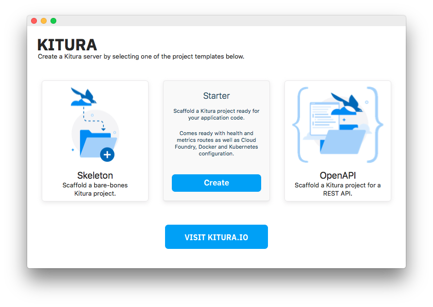
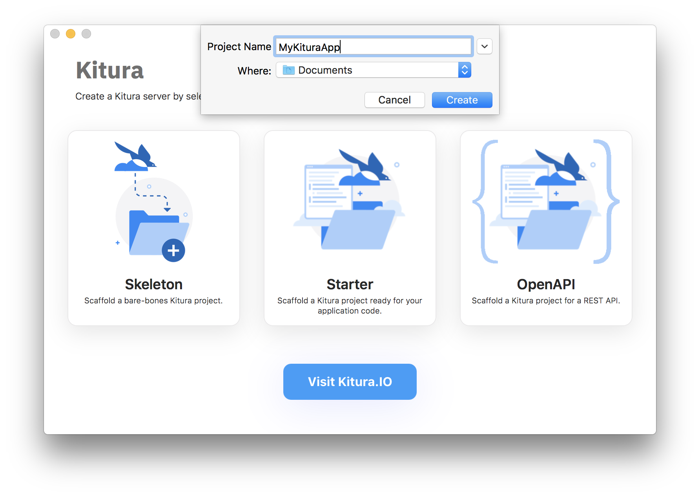
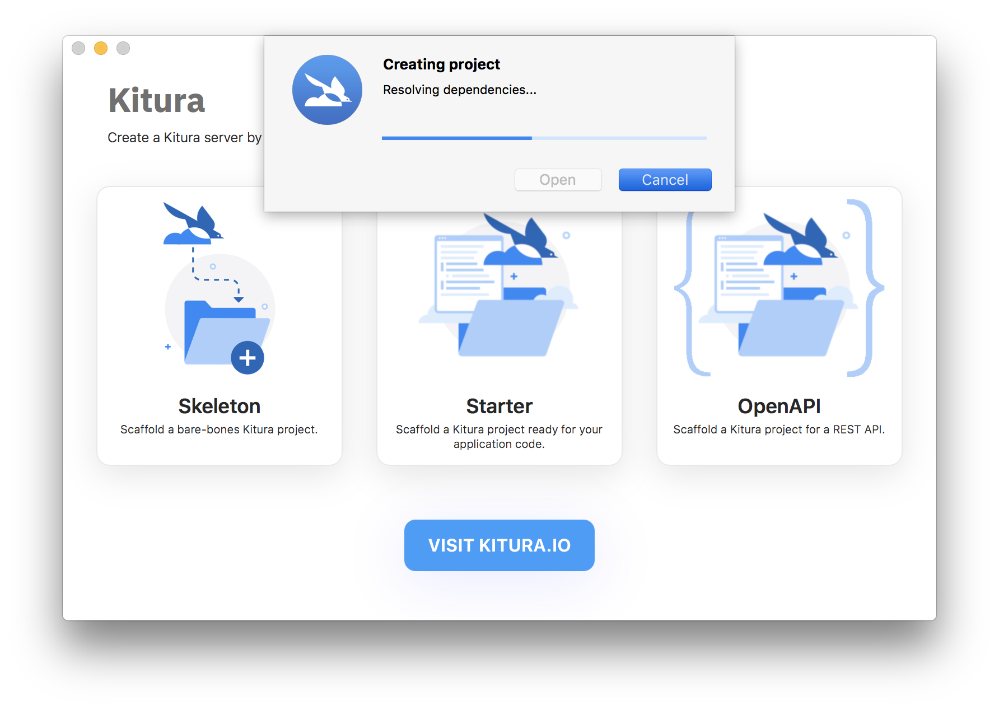

Open Kitura from the Applications folder.
Hover over the Starter tile and click `Create`:
Enter the following for Project Name and Where:
The following guides will assume you've chosen the above destination and name.
However you can use whatever destination and name you'd like, just substitute those in throughout the rest of the guides.
Once you click `Create` the app will create and build your project. It will also generate you an Xcode project.
Add routing: Add REST APIs, such as HTTP GET, to your server